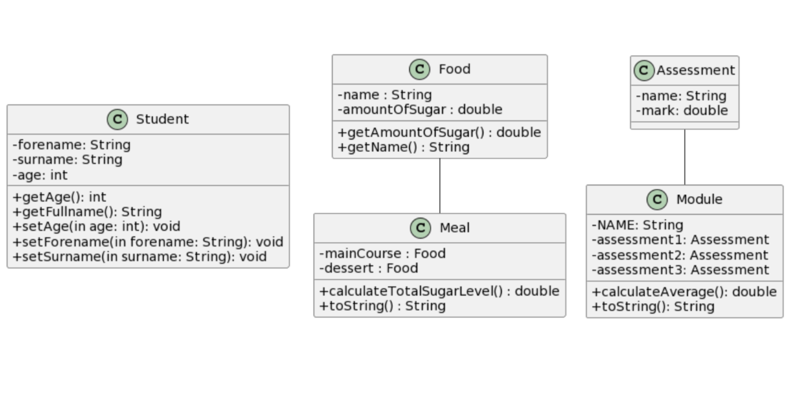
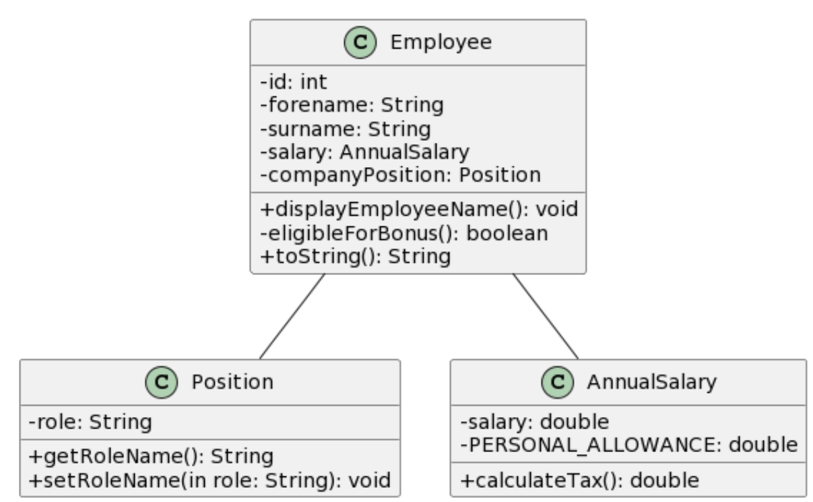
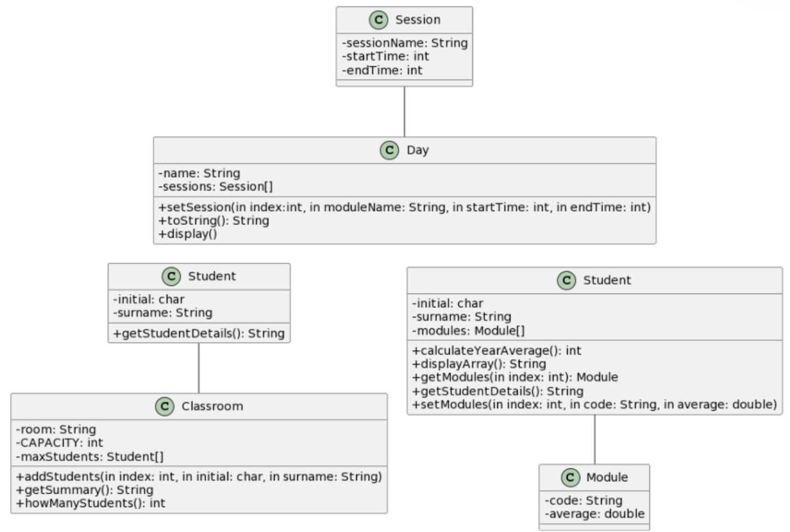
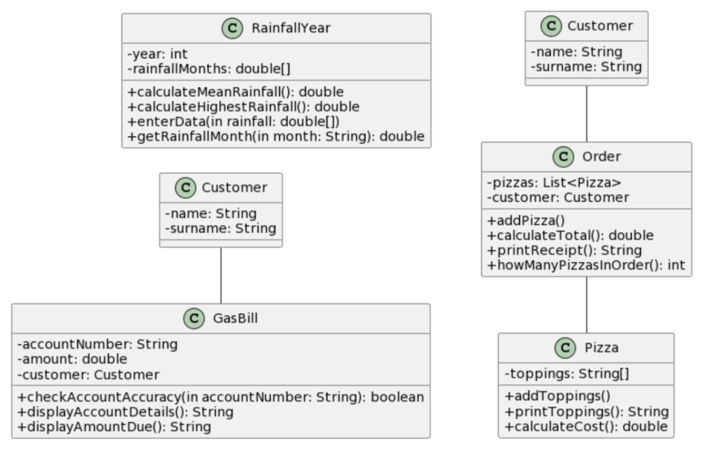
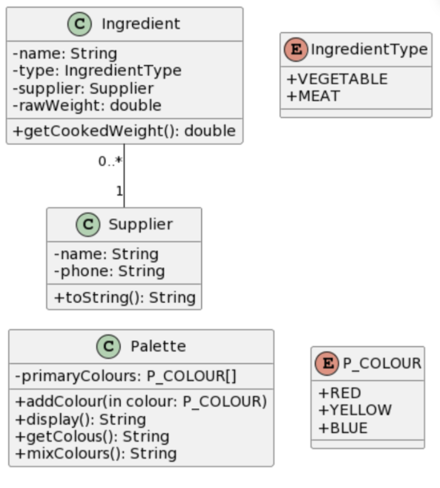
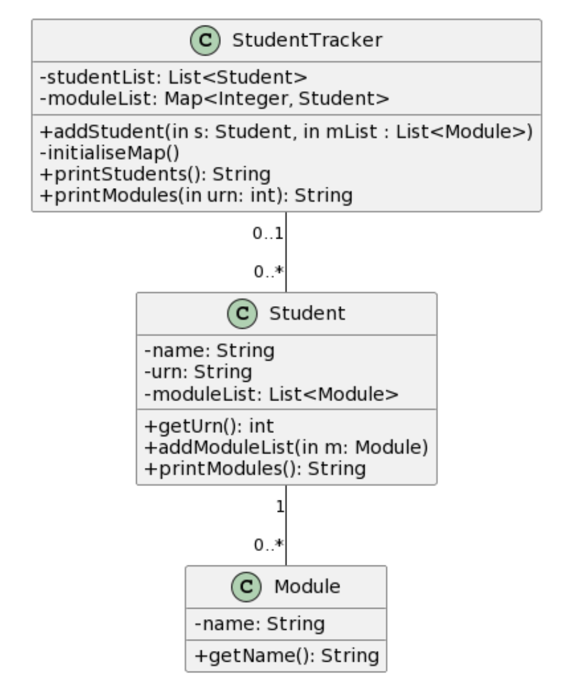
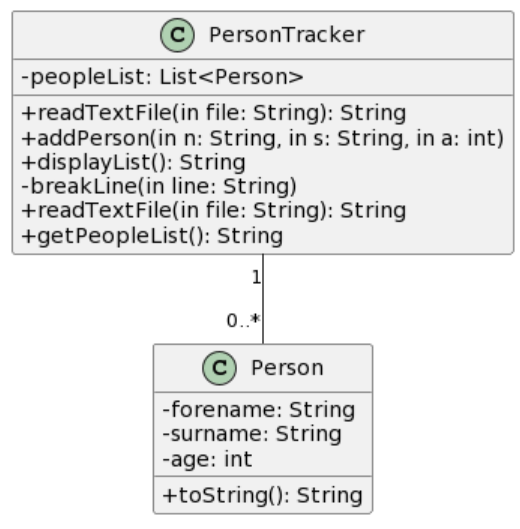
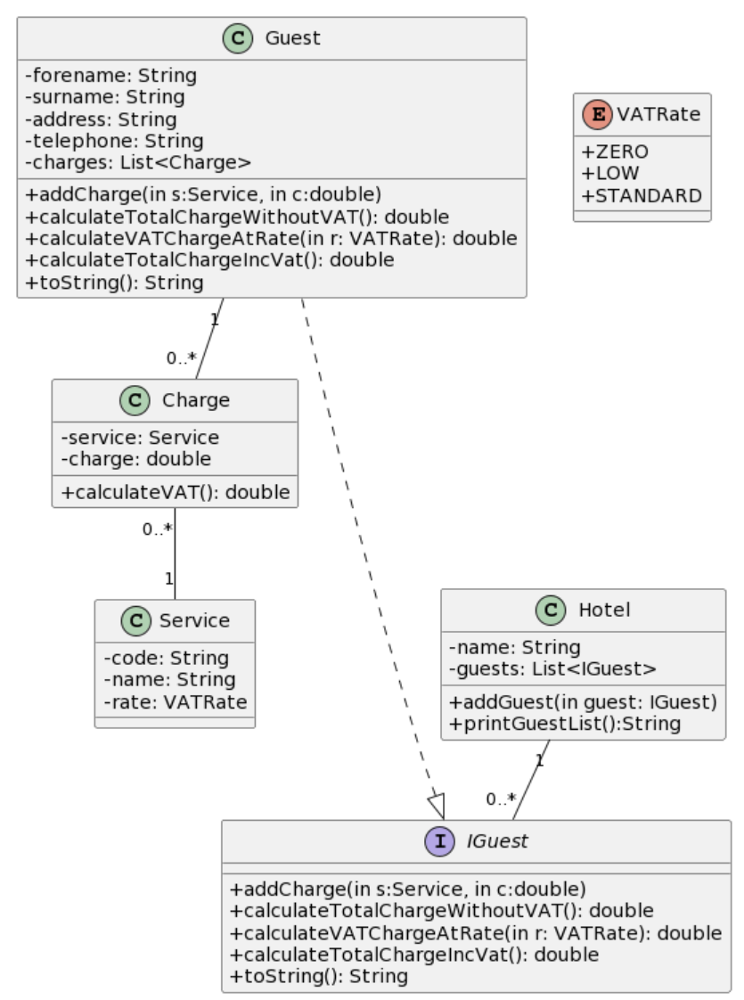
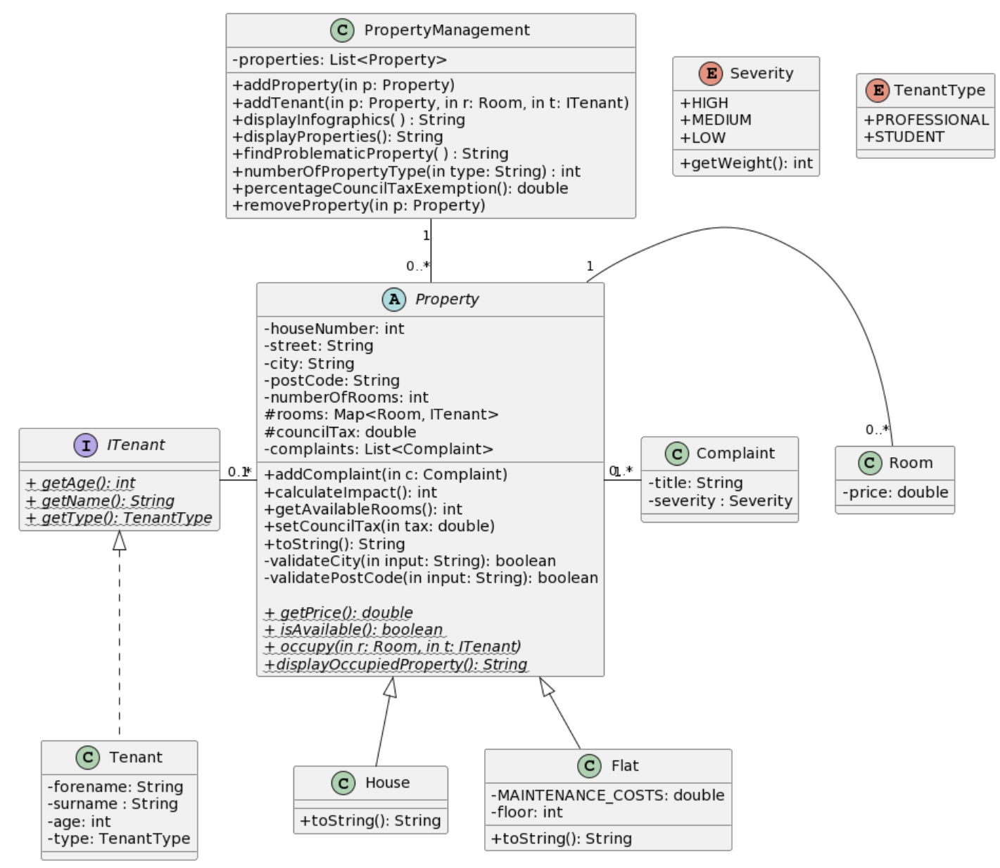

Java is the language of choice at the University of Surrey. Through a combination of GitLab and Eclipse,
I am quickly building confidence with the language, gaining more object-oriented skills and general Java
knowledge with each set of tasks (UML diagrams). Scroll further down to see my most recent work.

Three seperate tasks with UML diagrams reading left to right for parts a, b and c. These problem sets were taught with encapsulation and the creation of getters and setters in mind. Also taught the need for toString() methods.

Each part of this problem set built up to part c, where all three were put together to form a connect web of classes between employee, position and annual salary. The calculate tax function was based off the government's most recent tax bands.

Each task from this problem set required us to create our own getters and setters depending on our own intuition of whats needed between them. Part c in particular taught us about array manipulation in Java. Introduction to validation.

This problem set involved a lot of logic behind each method, namely looping and efficient conditional statements. This set also went more in depth into arrays and array lists.

This problem set taught us about enumerator types, and goes a lot further in depth into formatting logical, detailed code. Also takes into account detailed input validation using regular expressions, including string maipulation.

Problem sets 7a and 7b built up to 7c, where all three classes got put together. This set introduced maps, specifically hash maps - making us link a student object (with a list of modules) to their URN.

These problems gave me more experience in my existing knowledge, and gave us a small insight into file reading, line splitting and filling in values based on a set of text files. The UML diagram shows 8c, however 8b also uses file handling

Set 9 exposed us to interfaces, a function to help protect against unwanted changes in methods of a specified class. The program adds guest objects, with a set of charges based on services (with varying VAT levels), adding them to a hotel class. This means the hotel can total the charges for any guest, or output all guests at any point in time.

This coursework comprised of 3 questions, building up to the UML diagram as shown. This coursework introduced
me to abstract classes, protected variables and a lot more. It is a system for a letting agent renting out
properties. These properties have rooms attached to tenants, who can make complaints. A property can be a
flat or a house; the main difference being a flat can only be rented by professionals and can only be rented
out by one tenant. Both houses and flats have council tax, and methods to display the infographics of the tenants.
Also, please note the project required us to also write tests to ensure the functionality of our program. Most
of these tests are not my own work, but a handful I have updated to ensure the full functionality was met. Please
see these tests to get an idea of what my project can do.